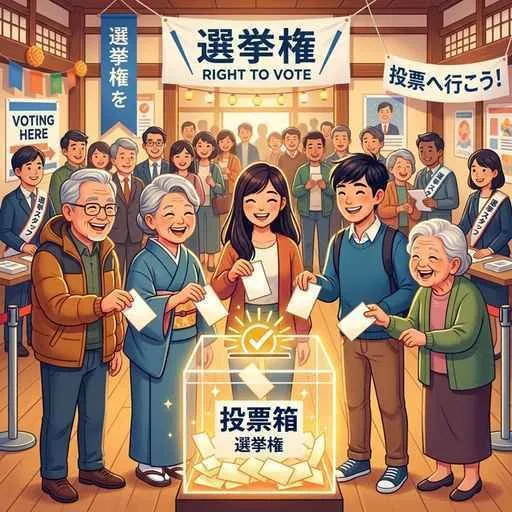

4. 民主政治と選挙
日本国憲法は国民主権を掲げており、国の政治を決める最終的な決定権は私たち国民にあります。しかし、数千万人の国民が全員集まって話し合うことは不可能なため、私たちは代表者を選んで政治を託しています。今回は、民主政治の意思決定ルールと、その土台となる「選挙の仕組み」や現代が抱える課題について学びます！
1. 民主政治の決定方法と「政党」
主権者である国民が直接話し合って決定する仕組みを「直接民主制」と呼びますが、現代の国々では国民が選挙で選んだ代表者が議会で話し合って決める間接民主制（かんせつみんしゅせい）（議会制民主主義）が主流です。
① 意思決定の原則と少数意見の尊重
議会などで意見が一致しない場合は、多数派の意見を採用する多数決の原理（たすうけつのげんり）が用いられます。しかし、多数決を行う前に、少数派の意見もしっかり聞いて話し合いに反映させる「少数意見の尊重」が不可欠です。これを怠ると、多数派の横暴（独裁）になってしまいます。
② 政党政治と内閣
現代の政治は、同じ政策や考えを持つ人々が集まる団体である政党（せいとう）を中心に動いています（政党政治）。
- 与党（よとう）：選挙に勝ち、内閣を組織して政権を担当する政党（現在は自民党と公明党など）。複数の政党が協力して政権を担う場合を連立政権（れんりつせいけん）と呼びます。
- 野党（やとう）：政権を担当せず、与党の政治を監視・批判して次の政権を目指す政党。
2. 民主的な選挙の「４原則」
国民の代表を選ぶ「選挙」は、民主政治の土台です。近現代の民主国家では、以下の４つのルール（原則）が厳格に守られています。テストで記述や選択で非常によく狙われます。
① 普通選挙（ふつうせんきょ）
納税額や性別、身分に関わらず、一定の年齢（現在の日本では満18歳以上）に達したすべての国民に選挙権を認める原則。（※戦前の日本は長らく男性のみ、かつ納税制限がありました）
② 平等選挙（びょうどうせんきょ）
性別や財産、社会的地位に関係なく、有権者はすべて「1人1票」として、票の価値を平等にする原則。
③ 秘密選挙（ひみつせんきょ）
誰がどの候補者や政党に投票したかを他人に知られないよう、無記名で投票する原則。
④ 直接選挙（ちょくせつせんきょ）
有権者が代表者（議員など）を、他の人を介さずに直接自分自身の手で投票して選ぶ原則。
3. 日本の国政選挙の仕組みと現代の課題
日本の国会を構成する衆議院と参議院では、それぞれ異なる選挙制度が採用されています。
① 衆議院議員選挙の仕組み
衆議院の選挙では、小選挙区比例代表並立制（しょうせんきょくひれいだいひょうへいりつせい）という制度がとられています。有権者は「候補者名」を書く小選挙区と、「政党名」を書く比例代表の2票を投じます。
- 小選挙区制：1つの選挙区から最多得票の1人だけを選ぶ。大政党に有利で政局が安定しやすい一方、落選者に投じられた無駄な票（死票／しひょう）が多くなる欠点があります。
- 比例代表制：政党の得票率に応じて議席を配分する。小政党にも議席が回りやすく死票が少ないのが特徴です。
- ※小選挙区と比例代表の両方に同じ候補者が立候補できる「重複立候補」が認められています。
② 選挙をめぐる２つの大きな課題
◆ 一票の格差（いっぽうのかくさ）
人口の移動などによって、選挙区ごとの議員1人あたりの有権者数に大きな差が生じ、有権者の「1票の重み」に不平等が生じる問題。憲法第14条の「法の下の平等」に反するとして裁判が起こされ、最高裁判所から「違憲状態」などの判決が下されることがあります。
◆ 若者の投票率低下
2016年から選挙権年齢が満18歳以上に引き下げられましたが、若年層の投票率の低さが問題となっています。有権者に占める高齢者の割合が増え、高齢者の意見が政治に反映されやすくなる「シルバーデモクラシー」と呼ばれる現象を招く懸念があります。

図1：一票の重みの不均等を解消するため、選挙区の定数削減などの区割り見直しが行われています
🔥 この単元的テスト対策・暗記のコツ
-
★
選挙の4原則の判別問題：
・「財産で区別しない ＝ 普通選挙」「1人1票 ＝ 平等選挙」のひっかけ問題が頻出です。言葉の定義を正しく一致させておきましょう。 -
★
小選挙区制の長所・短所（記述！）：
・記述：「小選挙区制の特徴を、政権の安定性と票の有効性の観点から説明しなさい。」
・解答：「**多数党が議席を得やすいため政権が安定しやすい長所があるが、落選者に投じられた死票が多くなる短所がある。**」 -
★
「一票の格差」の記述対策：
・記述：「一票の格差とはどのような問題か、説明しなさい。」
・解答：「**選挙区によって議員1人あたりの有権者数に差があり、有権者の持つ1票の価値（影響力）が不平等になってしまう問題。**」